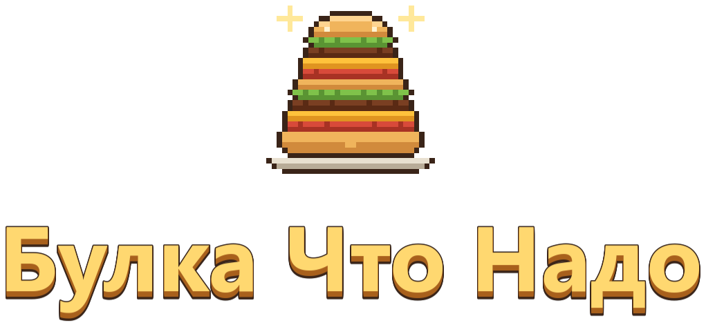
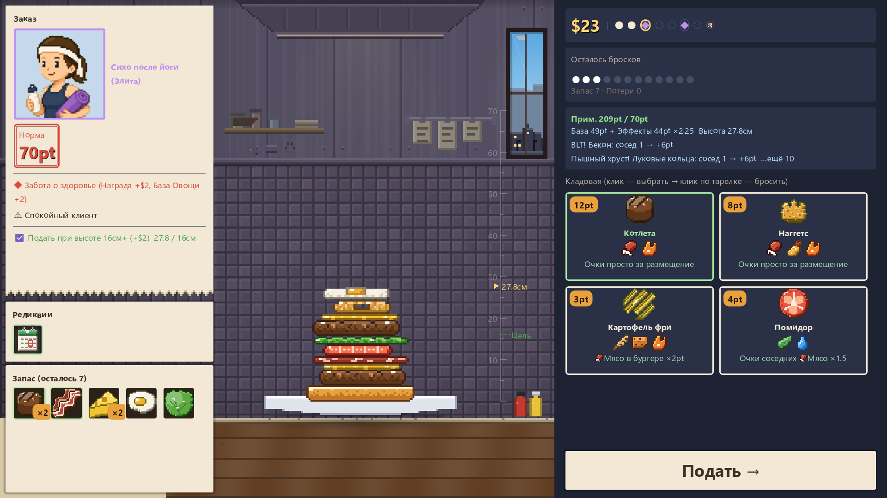
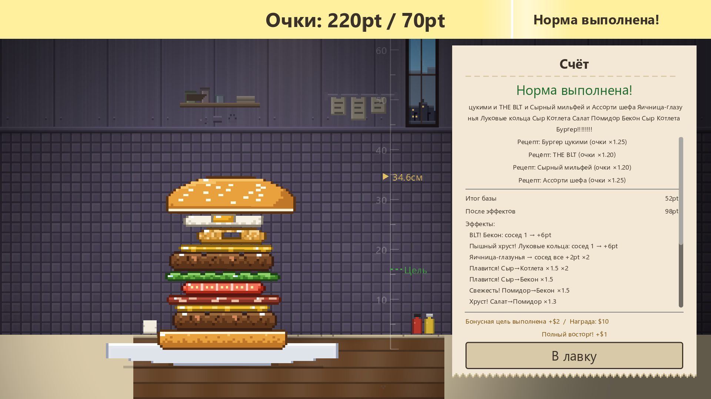
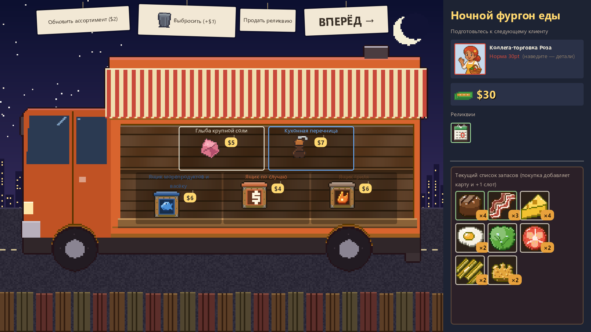

Бросай! Складывай! Зажми ради синергии!
Физический рогалик про строительство бургеров
Добавить в желаемое в SteamВыход — IV квартал 2026 г. / Windows (Steam)
Что это за игра?
«Булка Что Надо» — рогалик с построением колоды, в котором вы складываете бургеры с настоящей физикой.
Вы управляете бургерной. Каждый клиент называет норму, а вы прямо на месте собираете бургер под неё. Проблема в том, что ингредиенты подчиняются физике. Прицелиться и не завалить башню — это только ваши руки. Ингредиенты цепляют эффекты на соседей: чем выше и аккуратнее башня, тем больше очков.
Как проходит забег

Прицельтесь и бросайте
Прицельно бросайте ингредиенты из руки на тарелку и запускайте синергии между соседями. Они катятся, кренятся и падают.

Зажми ради синергии
Накройте верхней булкой и подавайте — бургер оценят. Эффекты соседей складываются, и очки взлетают. Не дотянули до нормы — сразу конец игры.

Ночной фудтрак
После каждого клиента открывается ночной фудтрак (магазин): покупайте ящики и реликвии, выбрасывайте ненужные ингредиенты. Угодите последнему боссу — и победа ваша.
Что складываем
- Более 90 ингредиентовОчки, множители, ловушки для падений. Все эффекты смотрят на соседей
- Более 30 рецептовНужная комбинация даёт множитель на весь бургер и открывает новые ингредиенты
- Более 40 реликвийПостоянные эффекты, усиливающие целый тег
- 8 поваровУ каждого свой уникальный бан и стартовая колода
- Клиенты с характеромЛюбимое, нелюбимое, кости. Заказ меняется каждый раз
- Более 70 достиженийА также Каталог и Альбом бургеров
Проверьте мастерство
Ранг заведения ★0–5 и «Шеф-ветеран» (точка сброса сама ходит влево-вправо) поднимают сложность. Результаты ежедневного вызова и сверхурочных попадают в таблицы лидеров Steam.
{kind=link}
{kind=link}
{kind=link}
{kind=link}
{kind=link}
Об игре
- Название
- Булка Что Надо
- Также известна как
- A Bun Above / いただきバーガー
- Жанр
- Физическое строительство × рогалик с построением колоды
- Разработчик / издатель
- NoZworks
- Платформа
- PC (Steam) / Windows 10 и 11 (64 бита)
- Дата выхода
- IV квартал 2026 г. (планируется)
- Языки
- Русский / 日本語 / English / 简体中文 / 繁體中文 / 한국어 / Deutsch / Français / Español / Português (Brasil)
Добавьте в желаемое, чтобы не пропустить выход
Перейти на страницу в Steam